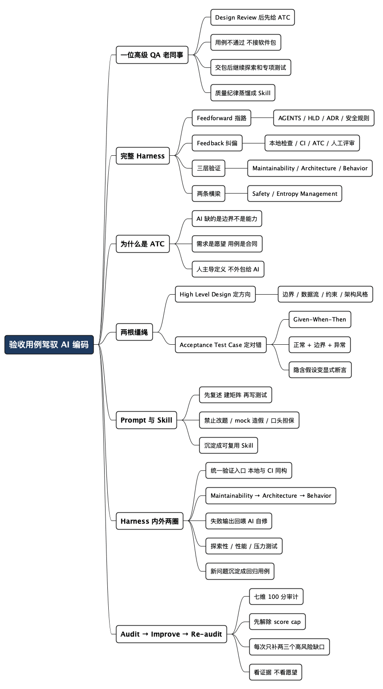

验收用例，才是驾驭 AI 编码的那根缰绳
Posted on 二 28 7月 2026 in AI
| Abstract | 验收用例，才是驾驭 AI 编码的那根缰绳 |
|---|---|
| Authors | Walter Fan |
| Category | learning note |
| Version | v1.2 |
| Updated | 2026-07-29 |
| License | CC-BY-NC-ND 4.0 |
验收用例，才是驾驭 AI 编码的那根缰绳
我以前有一位老同事，是位很资深的 QA。每次和她做完 Design Review，她很快就会拿出一整套 Acceptance Test Cases（验收测试用例），然后把话说得很直：这些用例要是不通过，就别把软件包交给我测。
她不是故意给开发找麻烦。恰恰相反，这条规矩替大家省了不少时间。验收用例摆在前面，开发知道“做到什么程度才算完成”，QA 也不用接过一个半成品，再陪着开发玩“你修一个、我测一个”的乒乓球。软件包在交给她之前，开发必须先证明：这些双方确认过的基本行为，已经全部成立。
而且，那套用例从来不是写完就供起来。随着设计细化和风险暴露，她会继续补充、修订。等软件包真的交到她手上，通过既定用例也只算拿到入场券。她还会做探索性测试，换些事先没写进脚本的走法去“找茬”；性能和压力测试少不了，异常路径、边界条件也一个都不肯放过。
后来老东家经历了几次裁员，我们已经不是同事了。我却常常怀念那段有人替软件质量认真把关的日子。现在回头看，她当年做的，不就是一套很扎实的工程 Harness（约束和验证 AI 行为的工程护栏）吗？
这不，我把她“蒸馏”成了一个 Skill。
当然，我蒸馏的不是一个人，而是她那套质量纪律：先把 High Level Design 说清楚，再把 Acceptance Test Cases 写扎实；基本门槛没过，不准交付；门槛过了，还要继续探索。 无论用 OpenSpec、Superpower，还是别的 Agent 工具，真正决定成败的都不是提示词有多花哨，而是你有没有把“什么叫做对”讲清楚。
- 一句话主张：AI 编码的上限，由你的验收标准决定，而不是由模型决定。
- 要区分：验收用例不是“事后测一测”，而是“事前把话说死”——它是需求的可执行版本，也是 Agent 交付软件包之前必须跨过的门槛。
为什么是 Acceptance Test Case，而不是别的
先说个容易被忽略的常识：AI 不缺生成能力，缺的是边界。你给它的自由度越大，它漂移（drift）得越远。人跟人交流靠默契补齐语义，AI 没有你脑子里那套默契，它只会拿着你字面上的话，挑一条最省力的路走完。
我们做工程的其实早有对策，只是过去用得不够狠。测试驱动开发（TDD，先写测试再写实现）讲的就是“先把对错定义好”。到了 AI 时代，这个思路的价值被明显放大——因为写实现越来越快，写实现的那个“人”也不再总是你。既然实现随时可以重来，那唯一稳定的锚点，就是验收标准。
需求是愿望，验收用例是合同。
AI 只对合同负责，不对你的愿望负责。
打个厨房里的比方。你跟厨师说“做个好吃的”，端上来什么都可能；你说“番茄炒蛋，糖两克盐一克，蛋要嫩，出锅前十秒下葱花”，那道菜的下限就被你锁住了。验收用例干的就是后面那件事——把“好吃”翻译成可以逐条打勾的动作。越详尽，AI 越无处遁形。
这里要厘清一组容易混的概念：
| 层次 | 回答的问题 | 谁看 | 在这套方法里的角色 |
|---|---|---|---|
| High Level Design | 系统长什么样、边界在哪 | 人 + AI | 地图，定方向 |
| Acceptance Test Case | 做到什么程度才算对 | 人 + AI | 缰绳，定对错 |
| Unit / Integration Test | 每个零件、每条链路是否工作 | AI 生成、人审 | 螺丝，保细节 |
| Lint / Format / Scan | 写法是否合规、有没有雷 | 机器 | 质检，兜底线 |
很多人一上来就让 AI “写代码 + 写测试”，结果测试是 AI 自己出的题、自己判卷——它当然容易全过。我那位老同事的做法正好相反：验收用例在开发交付之前就摆上桌，而且由开发、QA 和需求相关方共同确认。AI 可以帮忙补充用例，但验收标准必须由人主导，这是不能外包给 AI 的部分。
ATC 是灵魂，但不是整套 Harness
读到这里，很容易产生另一个误会：是不是 ATC 写得足够详细，其他东西就都不重要了？当然不是。ATC 是 Behavior Harness（行为验证层）里最关键的合同，却不是整个 Harness。
一套能驾驭 AI 的 Harness，至少要形成一前一后的闭环：
| 方向 | 解决什么问题 | 常见载体 |
|---|---|---|
| Feedforward（前馈） | AI 动手前，告诉它项目地图、怎么工作、什么不能碰 | AGENTS.md、模块指南、HLD、ADR、任务模板、安全规则、批准过的示例 |
| Feedback（反馈） | AI 动手后，用证据判断结果是否可接受 | Format、Lint、Type Check、架构检查、扫描、UT、IT、ATC、CI、人工评审 |
只有 Feedforward，没有 Feedback，规则很容易沦为墙上的标语；只有 Feedback，没有 Feedforward，AI 就会一次次撞上本可避免的同一堵墙。前者负责让它少走弯路，后者负责在它走偏时尽快拉回来。
从验证对象看，还可以把 Harness 分成三层：
| Harness 层 | 主要检查什么 | 典型证据 |
|---|---|---|
| Maintainability Harness | 代码是否清楚、统一、容易继续维护 | Format、Lint、Type Check、复杂度、死代码、依赖健康、覆盖率 |
| Architecture Fitness Harness | 代码是否仍然遵守架构承诺 | 分层与依赖边界、API / Schema 兼容性、性能预算、可观测性和安全不变量 |
| Behavior Harness | 用户真正关心的行为是否正确 | ATC、批准过的 fixture / golden file、E2E、探索性测试、QA / 产品验收 |
我的老同事把 Behavior Harness 守得很牢，但她也从不只看功能：性能、压力、异常路径和边界条件，本来就横跨行为与架构两层。到了 AI 编码时代，还得再加两条横梁：Safety and Permissions 管住密钥、生产数据、部署、迁移和破坏性操作；Entropy Management 明确谁维护这些规则、多久复查一次，免得半年后命令早就失效，Agent 还在一本正经地照着跑。
所以更完整的说法应该是：
HLD 和项目指南负责告诉 AI 怎么做，ATC 负责定义什么叫做对，三层 Harness 负责拿出证据，安全边界和维护机制负责让这套系统不失控、不过期。
第一根缰绳：把 High Level Design 说清楚
验收用例不是凭空冒出来的，它长在设计上。老同事之所以能在 Design Review 之后很快拿出测试用例，是因为她会盯着设计里的每个承诺追问：输入是什么？输出是什么？依赖挂了怎么办？并发上来会怎样？所以第一步永远是 High Level Design（高层设计，简称 HLD）。这里不需要 UML 画到手抽筋，关键是把下面几件事写死：
- 系统边界：这个模块负责什么，明确不负责什么。“不负责”往往比“负责”更重要——它挡住 AI 自作主张。
- 核心数据流：输入从哪来，怎么变换，输出到哪去。一张 Mermaid 流程图胜过三段话。
- 关键约束：并发模型、性能目标、一致性要求、失败时的行为。例如设计一个令牌桶限流器，只要 HLD 里写死一句“令牌必须连续补充，不能在整秒边界重置全部额度”，实现就少了一大块含糊空间。
- 架构风格：分层还是六边形？依赖往哪个方向流？错误怎么传播？这些定了，AI 生成的代码才不会四不像。
HLD 的作用是给 AI 一张地图。但地图只管方向，不管你有没有走到目的地——验收有没有过，得靠用例说话。
第二根缰绳：把验收用例写到 AI 无处发挥
这是整套方法的核心。一条合格的验收用例，我要求它满足 Given-When-Then 的结构（给定前置条件—当发生某操作—则应有某结果），并且每一条都要可执行、可判定、有边界。
拿限流器举例，一份“越详尽越好”的验收用例长这样：
Feature: 令牌桶限流器
Scenario: 稳态放行
Given 限流器配置为每秒 10 个令牌、桶容量 10
When 客户端以每秒 10 个的均匀速率请求 5 秒
Then 全部 50 个请求都应放行
Scenario: 突发削峰
Given 桶已满（10 个令牌）
When 客户端在 1ms 内发起 20 个请求
Then 前 10 个放行，后 10 个应被拒绝并返回 429
Scenario: 跨整秒边界不能重复获得完整额度
Given 桶已满（10 个令牌）且测试使用可控的单调时钟
When 在第 999ms 发起 10 个请求，并在 2ms 后再发起 10 个请求
Then 第一批 10 个请求应放行
And 第二批 10 个请求应全部拒绝
And 直到累计补充至少 1 个令牌后，才应再次放行请求
Scenario: 令牌恢复
Given 桶被瞬间耗空
When 等待 500ms 后再请求
Then 应恰好放行约 5 个（10 令牌/秒 × 0.5 秒）
Scenario: 边界与异常
Given 配置速率为 0
When 任意请求到达
Then 应拒绝所有请求，且不得抛出未捕获异常
注意几个细节，它们正是拉开“能用”和“扛揍”差距的地方：
- 把隐含假设写成显式断言。在这个例子里，“令牌连续补充”不能只存在于设计者脑中。跨整秒边界的双突发一旦变成会失败的用例，AI 就没法拿固定窗口实现蒙混过关。
- 数值要具体。“大概”“合理”这类词是 AI 的免死金牌，能删就删。
- 一定要有异常路径。速率为 0、并发爆炸、依赖超时……这些是 AI 最爱偷懒略过的地方，也是线上最爱出事的地方。
- 覆盖边界值。桶满、桶空、恰好一个令牌，这些临界点比正常路径值钱得多。
我那位老同事给我留下的经验法则很朴素：写用例时，要像一个想找茬的 QA，而不是一个想交差的开发。 你替 AI 想到的每一个刁钻场景，都是未来少熬的一个夜。
把这些缰绳套进一套 Prompt
方法论落到实处，得有个能复用的提示词模板。下面这套骨架可以直接抄去改：
# 角色
你同时扮演严谨的资深开发和高级 QA。
开发负责实现，QA 对不满足验收标准的交付拥有否决权。
# 任务
实现 <模块名>。你必须让下面的验收用例全部通过，一条都不能少。
# 项目上下文（Feedforward）
- 先读取仓库真实存在的 AGENTS.md / 模块指南 / README / 架构文档。
- 从 Makefile、package.json、pyproject.toml、Maven / Gradle 配置或 CI 中发现真实命令。
- 找出架构边界、高风险目录、批准过的 fixture / golden file 和安全规则。
- 未发现的命令或规则必须标记为缺口，不得自行编造。
# High Level Design
<粘贴 HLD：边界 / 数据流 / 关键约束 / 架构风格>
# Acceptance Test Cases（不可协商）
<粘贴 Given-When-Then 用例，含正常、边界、异常路径>
# 专项测试目标
- 性能目标：<延迟 / 吞吐量 / 资源占用>
- 压力目标：<并发量 / 持续时间 / 降级行为 / 恢复时间>
- 探索性测试重点：<最担心出错的区域和待验证假设>
# 工程约束（硬性）
- 架构风格：<项目实际采用的分层、模块和依赖规则>
- 代码规范：<项目已有规范和配置，不得凭空增加工具>
- 统一验证入口：<项目真实存在的 make check / mvn verify / gradle check / npm run check 等>
- 架构检查：<项目真实存在的边界、API / Schema 兼容性检查>
- 安全检查：<项目真实存在的 SAST、依赖和密钥扫描>
- 覆盖率门槛：<项目已有门槛；如果没有，列为待确认，不得擅自设定>
- 权限边界：未经明确批准，不得部署、迁移数据库、访问生产数据或执行破坏性命令
# 工作流（严格按序）
1. 先报告你找到的项目指南、技术栈、验证入口和缺失项，不要直接写代码。
2. 复述你对 HLD 与验收用例的理解，列出遗漏的边界、异常、安全和兼容性风险，等我确认。
3. 建立“需求 / ATC → UT / IT / 架构检查 / 专项测试 / 人工判断”的追踪矩阵。
4. 先写测试（把验收用例翻译成可执行测试），再写实现。
5. 通过项目现有的统一入口运行 Maintainability / Architecture / Behavior 三层检查。
6. 本地检查通过后，确认 CI / Pre-merge 运行同一组关键检查；不一致就明确报告。
7. 给出最终证据：运行了什么、结果如何、什么没运行、为什么没运行、还剩什么风险。
8. 全部通过后，再给出探索性测试章程，说明还准备从哪些角度继续找问题。
9. 若有任何一条用例无法满足，停下来说明，不要擅自修改需求。
# 禁止
- 禁止修改或"放宽"验收用例来让测试变绿。
- 禁止随意改写批准过的 fixture、golden file 或 snapshot 来迁就实现。
- 禁止用 mock 绕过真实行为断言。
- 禁止编造命令、工具、文件、测试结果或覆盖率。
- 禁止在注释里声称"应该没问题"而不给出验证证据。
- 禁止未经批准触碰密钥、生产环境、部署和破坏性操作。
- 禁止把“现有测试通过”表述成“软件没有其他缺陷”。
这个 Prompt 的精髓不只是“先复述、先建追踪矩阵、再写测试”，还多了一条很容易被忽略的纪律：先从仓库里找事实，再决定跑什么。 Harness 最怕漂亮的假动作——文档里写了一个根本不存在的命令，报告里说“应该通过”，或者为了变绿悄悄改掉批准过的 fixture。诚实地写“这项检查目前缺失”，比编一个看上去很专业的结果强得多。
我把这套纪律做成了 qa-acceptance-harness
我当然没法把一位经验丰富的高级 QA 塞进 Markdown 文件。她在测试过程中表现出来的直觉、怀疑和判断，也不是几条指令能够复制的。不过，她坚持的工作方式可以留下来：Design Review 之后先定义验收用例，基本门槛没过不接包，接包之后继续探索，发现新问题再反过来充实用例。
我把它做成了公开的 qa-acceptance-harness。它不是“帮我多写几条测试”的提示词，而是一套带人工闸门的 QA 工作流：先从需求、设计、工单或仓库建立 test basis（测试依据），再按风险写测试计划和 Given-When-Then 用例，冻结经人确认的验收基线，最后才允许执行检查并给出交付结论。
它有三种工作模式：
| 模式 | 适用场景 | 产物与边界 |
|---|---|---|
plan |
有需求或设计，实现尚未完成 | 测试计划、ATC、追踪矩阵、探索性测试章程；不下发布结论 |
execute |
已有人工批准的验收基线和可执行目标 | 按原基线执行检查，记录证据，给出发布建议；不得临场改题 |
full |
想从计划一路做到验收 | 先完成 plan，停在人工批准门；批准后才能进入 execute |
这里最要紧的不是模式有几个，而是中间那道 Approval Gate。AI 可以起草用例，却不能自说自话地宣布“这些就是最终标准”；AI 可以执行检查，却不能为了让结果变绿，偷偷修改 ATC、fixture、golden file 或 snapshot。需求真的变了，可以由人批准一次 baseline revision；实现没达到要求，不能反过来改答案。
整个流程分成七步：
- 建立测试依据，分清事实、假设、冲突与范围外事项。
- 检查 HLD 是否可测试，把缺失的设计决策标成
NEEDS DECISION，不编造精确指标。 - 按风险制定测试计划，用 P0 到 P3 排优先级，不搞“每个功能都必须压测”的机械清单。
- 编写带稳定 ID 的 ATC，并建立需求 / 风险到检查证据的追踪矩阵。
- 由人批准并冻结验收基线。
- 对指定版本和环境执行真实检查，逐项记录
PASS、FAIL、BLOCKED、NOT RUN或N/A。 - 按证据给出
PASS、CONDITIONAL PASS、FAIL或BLOCKED，再安排探索性测试。
注意，BLOCKED 不是一种比较含蓄的 PASS。环境没准备好、测试数据缺失、基线没批准、目标版本对不上，都只能老老实实写 BLOCKED。我写这个 Skill 时特意把状态词抠得很细，因为工程报告最怕一句“基本没问题”——通常“基本”负责安慰人，“问题”负责半夜叫人。
Skill 里还附了测试计划、验收用例、追踪矩阵、执行报告和 implementation handoff 模板。这样 QA 产出的批准基线可以原样交给编码 Agent：先映射 ATC 到测试层级，再写测试和实现，最后通过项目真实存在的入口验证。找不到 make check、mvn verify 或 npm run check 之类的入口，就报告缺口，不能现场表演一个不存在的命令。
把这套方法存成 Skill，好处是方法论从“存在某位高手脑子里”变成“长在工具里”。新来的同事、下一个项目，甚至三个月后的自己，都能直接复用同一套纪律，不靠记性。这就是我所说的“蒸馏”：Skill 替代不了那位 QA，却能让每个 Agent 在交包之前，都先听见她当年的那句话——这些用例不通过，就别交付。
不是一个 Skill，而是一套三件套
只管验收还不够。项目本身如果没有可信的 Agent 指南、统一验证入口、CI 门禁和安全边界，再漂亮的 ATC 也可能落不到地。所以我又把 Harness 的“体检”和“修复”拆成两个 Skill，三个工具都放在 lazy-rabbit-skills 仓库里：
| Skill | 负责什么 | 不负责什么 |
|---|---|---|
qa-acceptance-harness |
按风险生成测试计划与 ATC，维护人工批准的验收基线，执行检查并给出有证据的发布建议 | 不替人批准标准，不实现生产代码，不把未知缺陷说成不存在 |
lazy-harness-audit |
从七个维度审计项目的 Agent 工作环境，给出 0 到 100 分、红黄绿状态、score cap 和优先改进项 | 只审计，不替项目实施改造 |
lazy-harness-helper |
根据审计结果优先解除 cap，用小改动补 Agent 指南、验证入口、CI、fixture、安全边界和维护机制 | 不重写应用架构，不擅自上重型工具或改发布配置 |
三者的关系并不复杂：
lazy-harness-audit → lazy-harness-helper → lazy-harness-audit
项目护栏体检 按优先级补洞 复查证据
qa-acceptance-harness
针对具体需求建立并执行“什么叫做对”的验收基线
前一条线让项目逐渐变得“适合 Agent 工作”，后一条线守住每次具体交付。一个管道路质量，一个管这趟车有没有安全到站。
安装和使用
仓库提供了安装脚本，可把 Skill 链接到 Claude Code、Codex、Cursor 和 OpenCode。稳妥起见，我建议先克隆下来看看脚本，再选择性安装这三个：
git clone https://github.com/walterfan/lazy-rabbit-skills.git
cd lazy-rabbit-skills
./install.sh qa-acceptance-harness lazy-harness-audit lazy-harness-helper
安装以后，不必背什么神秘咒语，直接用自然语言说明目标和模式即可：
请用 qa-acceptance-harness 的 plan 模式，
根据这份 HLD 生成风险测试计划、ATC 和需求追踪矩阵，先不要执行。
这些 ATC 已经由我确认，请用 execute 模式对 build 1.4.2 做验收，
没有证据的项目必须标为 BLOCKED 或 NOT RUN。
请审计当前仓库的 AI coding harness，给出分数、触发的 cap 和前三项改进。
请根据刚才的审计，用 lazy-harness-helper 先修掉最高优先级的两个缺口，
验证后重新审计，不要为了加分引入重型依赖。
完整安装、卸载和多 Agent 目录的说明，以仓库里的 README 为准。
通过 ATC 只是入场券
前面讲的都是“怎么定标准”。但标准如果要人手动一条条核对，AI 再快也白搭——瓶颈只是从写代码变成了验代码。真正的杀器，是把确定性的检查收进一个真实、可复用的验证入口，让 AI 一条命令就能跑，也能读懂结果。
这个入口应该优先长在项目已有的构建表面上，例如 make check、mvn verify、gradle check、npm run check 或现有的 ci/build.sh。不要一上来就另造一份“Agent 专用脚本”，结果人跑一套、AI 跑一套、CI 又跑一套，三套标准各自长歪。最理想的状态是：本地和 CI 调同一个入口，区别只在运行环境，不在质量标准。
但我那位老同事还教会我另一件事：自动化测试全绿，只代表已知问题没有重现，不代表未知问题不存在。 所以 Harness 不能只有一圈，而应该有内外两圈：内圈是确定性的自动验收，负责挡住不合格的软件包；外圈是探索性和专项测试，负责继续寻找我们还没想到的问题。
这条链适合按从快到慢、从便宜到贵的顺序排列，让问题尽量在成本最低的环节暴露：
flowchart TD
P[Feedforward: AGENTS / HLD / ATC] --> N[统一验证入口: check / verify]
CI[CI / Pre-merge] --> N
N --> A[Maintainability: Format / Lint / Type Check]
A --> B[Architecture: Boundary / API / Security]
B --> C[Behavior: UT / IT / ATC]
C --> G{全绿?}
G -->|否| H[AI 读失败输出→定位→修复]
H --> N
G -->|是| I[候选软件包]
I --> J[探索性 / 性能 / 压力测试]
J --> K{发现新问题?}
K -->|是| L[补充 HLD / ATC / 回归测试]
L --> N
K -->|否| M[人工终审与交付]
每一环各司其职，缺一不可：
- Format（格式化）：Prettier、gofmt、black 之类。统一风格，把“AI 的写法习惯”和“项目规范”对齐，省掉一堆无谓的 diff 噪音。
- Lint / Type Check（规范与类型检查）：抓坏味道、未使用变量、可疑比较、类型不匹配和圈复杂度等问题。这是代码规范的第一道机器闸门。
- Architecture Fitness（架构适应度）：文档里写“依赖只能向内”不算数，还要用项目技术栈适合的确定性规则守住模块依赖、API / Schema 兼容性和高风险目录。否则架构风格只是温馨提示。
- Static Scan（静态扫描 / 安全）：SonarQube、Semgrep、gosec。查的是 AI 最容易埋的雷：SQL 注入、硬编码密钥、空指针、资源泄漏。AI 生成代码尤其要过这一关，因为它可能生成看起来合理、实际上并不安全的写法。
- Unit Test（单元测试）：验证每个零件在隔离状态下正确。这里覆盖的是验收用例里那些“单点逻辑”。
- Integration Test（集成测试）：验证零件拼起来、跨模块、连上真实依赖（数据库、消息队列）之后还对。限流器跨整秒边界的行为，可以用可控时钟做确定性测试，再通过集成测试验证真实调用链。
- Acceptance（验收核对）：拿最终结果逐条对照 Given-When-Then，出一份通过 / 失败 / 未验证清单。对于关键流程，最好再配一份经人确认的 fixture、golden file 或示例输入输出；Agent 可以补测试，但不能为了迁就实现随手改答案。
- Performance / Stress（性能与压力测试）：验证系统不只在“能跑”的时候正确，也要在流量上来、资源吃紧、持续运行时守住 HLD 约定的指标和降级行为。
- Exploratory Testing（探索性测试）：不照脚本机械点选，而是带着风险假设去试不同路径。它不承诺穷尽所有缺陷，价值恰恰在于发现现有用例没有覆盖的盲区。
内圈的关键是把失败信息原样喂回给 AI。AI 读得懂 lint 报告和测试栈回溯，可以自己定位、自己修、再自己重跑。外圈的关键则是把每次新发现沉淀回内圈：探索性测试找到一个缺陷，就补一条 ATC、UT 或 IT；压力测试暴露一个临界点，就把那个数值写进 HLD 和回归测试。这样 Harness 才会越用越结实，而不是每次从头祈祷。
有个前提别忘了：这条链本身得由人来搭和把关。门槛设多严、哪些扫描项能豁免、覆盖率卡多少、什么风险值得继续探索，这些是工程判断，不能让 AI 自己给自己定。对于密钥、生产数据、部署、数据库迁移和破坏性命令，还要明确“默认不准做，除非得到人工批准”。缰绳可以让 AI 自己拉，但缰绳的另一头，得攥在人手里。
Harness 也要体检：Audit → Improve → Re-audit
还有一个经常被忽略的问题：我们辛辛苦苦搭好的 Harness，会过期。
目录会搬家，构建命令会变化，CI 会重构，批准过的行为样例也会被新需求淘汰。半年没人维护的 AGENTS.md，可能比没有更危险——没有的话，Agent 至少知道自己得去找；写错了，它反而会非常自信地跑偏。
为了解决这个问题，我后来做了两个配套 Skill：lazy-harness-audit 负责体检，lazy-harness-helper 负责按优先级补洞。它们背后的闭环很简单：
拿证据做基线审计 → 找到最高风险缺口 → 做最小改进 → 跑真实验证 → 重新审计
审计不是数一数仓库里有多少个 Markdown 和 YAML，而是看 Agent 能不能真正找到并用上这些东西。我把它拆成七个维度：
| 维度 | 分值 | 核心问题 |
|---|---|---|
| Feedforward Context | 20 | Agent 动手前，能否找到项目地图、命令、边界和 Done 标准？ |
| Feedback and Verification | 25 | 是否有真实可执行的一键验证入口、本地检查和 CI 门禁？ |
| Architecture Fitness | 15 | 架构规则只是写在文档里，还是能被确定性检查拦住？ |
| Behavior Correctness | 15 | 关键流程是否有 ATC、fixture、E2E 和人工语义判断？ |
| Safety and Permissions | 10 | 密钥、生产数据、部署和破坏性操作是否有明确边界？ |
| Entropy Management | 10 | 谁维护 Harness，何时复查，如何发现命令和文档已经过期？ |
| Harnessability and Usability | 5 | 本地环境是否可复现，任务是否足够小，反馈是否足够快？ |
80 分以上是 GREEN，60 到 79 是 YELLOW，再低就是 RED。不过，分数不是用来刷成就的。真正有用的是那些封顶项（score cap）：它们告诉你，有些地基没打，别的地方装修得再漂亮也没用。
| 缺失的地基 | 最终分数上限 | 优先动作 |
|---|---|---|
| 没有可读的项目指南 | 70 | 先补一份简洁、真实的根级 Agent 指南 |
| 没有可复用的本地验证入口 | 65 | 在现有构建系统上增加 check / verify 入口 |
| 没有 CI 或 Pre-merge 门禁 | 75 | 让 CI 运行与本地入口相同的关键检查 |
| 没有行为测试或批准过的 fixture | 80 | 先给一条关键用户路径补可信样例 |
| 没有安全与破坏性操作边界 | 80 | 明确密钥、生产、部署、迁移与删除规则 |
| 项目无法按文档在本地构建或测试 | 75 | 先修命令或如实记录阻塞，别假装可验证 |
这就是 lazy-harness-helper 的基本策略：先解除 cap，再补得分最低、风险最高的两三项；优先复用项目已有工具，不为多拿几分就塞一堆新依赖。 如果项目已经有 Makefile，就在上面补 make check；如果 mvn verify 本来就是标准入口，就别再造一个 agent-check.sh 来制造第四套流程。
最后一定要重新审计，而且要诚实。命令没有跑，就写“未运行”以及原因；工具不存在，就写“当前缺失”；只改了文档，就别宣称“质量门禁已经完成”。Harness 的目的本来就是减少含糊，不能最后把含糊藏进一份更漂亮的报告里。
Score evidence, not intent：看证据，不看愿望。
ATC 写得再漂亮，如果没有测试真正执行；架构规范写得再严，如果没有检查真正拦截，都只能算半成品。
一套可以明天就用的清单
把上面这些收成一张能落地的 checklist，下次让 AI 写模块前对着走一遍：
-
先做一次基线审计
找到真实的 Agent 指南、构建配置、CI、测试和安全规则；先解除会封顶的缺口，不急着堆新工具。 -
补 Feedforward
在根级和必要的模块级指南里写清项目地图、真实命令、架构边界、危险区域和 Done 标准，并链接到 HLD / ADR 等深层文档。 -
写 HLD 和验收用例（重头戏）
HLD 写清边界、数据流、关键约束和架构风格；ATC 用 Given-When-Then 定义什么叫做对。 -
把 ATC 写到可执行
用 Given-When-Then 覆盖正常、边界、异常、并发和故障恢复；数值要具体，把隐含假设变成显式断言。 -
建立验收追踪矩阵
每条 ATC 都要落到 UT、IT、架构检查、专项测试或人工判断，不能有“写了要求但没人验证”的空项。 -
建立统一验证入口
优先复用make check、mvn verify、gradle check、npm run check等现有构建表面，让本地和 CI 跑同一组关键门禁。 -
跑三层自动验收内圈
Maintainability → Architecture → Behavior，一条命令跑通，失败输出回喂 AI 自修。没全绿，不交包；批准过的 ATC 和 fixture 不准为了迁就实现而改写。 -
守住安全和权限边界
密钥、日志、PII、生产数据、部署、迁移、批量删除和破坏性 Git 操作，默认需要人工批准，并尽量用沙箱或只读权限缩小爆炸半径。 -
跑探索性测试外圈
性能、压力、异常和边界条件继续找茬；发现新问题，就补进 HLD、ATC 和回归测试。 -
报告、复审、维护
说明运行了什么、什么没运行、还剩什么风险；机器证据全绿后由人做语义终审，再安排 Harness 的 owner、复查节奏和下一次审计。
一句话：
别再指望靠更聪明的提示词驯服 AI，靠的是更扎实的验收标准。
你把“对”定义得越清楚，AI 的自由发挥空间就越小，交付就越可控。
最后一句
我当然知道，一个 Skill 代替不了那位老同事。它没有她多年积累的测试直觉，也不会在拿到软件包后忽然换个角度，找到所有人都没想到的那条路径。但每当 Agent 兴冲冲地说“已经完成”，这个 Skill 至少会替她追问一句：验收用例都通过了吗？性能、压力、异常和边界条件测了吗？没通过，就先别交付。
AI 时代最值钱的工程能力，可能不再只是“把代码写对”，而是把“对”定义清楚，再建立一套不通过就不放行的 Harness。她以前替我们的软件质量把关；现在，我们虽然不再共事，那套方法却可以继续和我并肩干活。
全文思维导图
@startmindmap
<style>
mindmapDiagram {
node {
BackgroundColor #F8F9FA
RoundCorner 10
Padding 10
FontSize 13
}
:depth(0) {
BackgroundColor #1E3A5F
FontColor white
FontSize 18
FontStyle bold
}
:depth(1) {
FontSize 15
FontStyle bold
}
:depth(2) {
FontSize 13
}
}
</style>
* 验收用例驾驭 AI 编码
** 一位高级 QA 老同事
*** Design Review 后先给 ATC
*** 用例不通过 不接软件包
*** 交包后继续探索和专项测试
*** 质量纪律蒸馏成 Skill
** 完整 Harness
*** Feedforward 指路
**** AGENTS / HLD / ADR / 安全规则
*** Feedback 纠偏
**** 本地检查 / CI / ATC / 人工评审
*** 三层验证
**** Maintainability / Architecture / Behavior
*** 两条横梁
**** Safety / Entropy Management
** 为什么是 ATC
*** AI 缺的是边界不是能力
*** 需求是愿望 用例是合同
*** 人主导定义 不外包给 AI
** 两根缰绳
*** High Level Design 定方向
**** 边界 / 数据流 / 约束 / 架构风格
*** Acceptance Test Case 定对错
**** Given-When-Then
**** 正常 + 边界 + 异常
**** 隐含假设变显式断言
** Prompt 与三个 Skills
*** 先复述 建矩阵 再写测试
*** 禁止改题 / mock 造假 / 口头担保
*** qa-acceptance-harness 管交付验收
*** lazy-harness-audit 管护栏体检
*** lazy-harness-helper 管优先补洞
** Harness 内外两圈
*** 统一验证入口 本地与 CI 同构
*** Maintainability → Architecture → Behavior
*** 失败输出回喂 AI 自修
*** 探索性 / 性能 / 压力测试
*** 新问题沉淀成回归用例
** Audit → Improve → Re-audit
*** 七维 100 分审计
*** 先解除 score cap
*** 每次只补两三个高风险缺口
*** 看证据 不看愿望
@endmindmap

本作品采用知识共享署名-非商业性使用-禁止演绎 4.0 国际许可协议进行许可。 欢迎在我的个人网站 https://www.fanyamin.com 访问原文并评论。